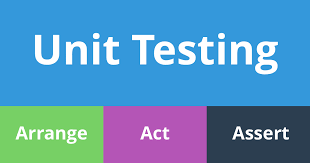
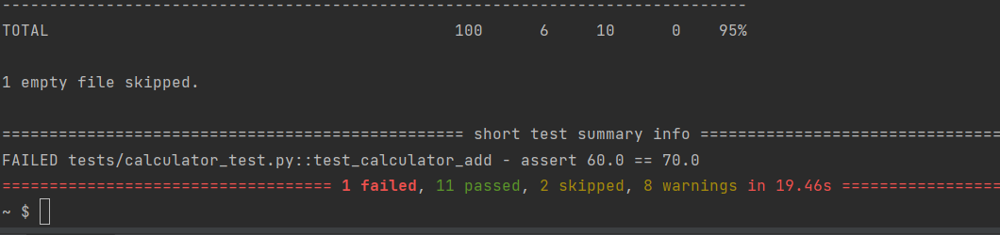
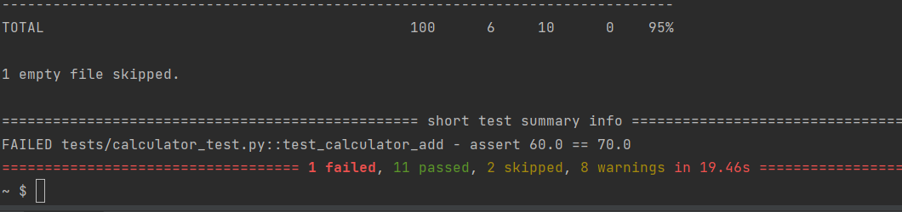
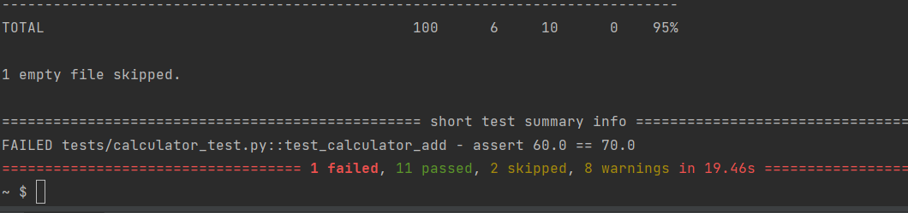

Article 2
Arrange-Act-Assert : A Defined plan for generating efficient test cases
This pattern has become common across each and every organizations. This testing suggests that you should divide your test method into three sections: arrange, act and assert. Each one of them only responsible for the part in which they are named after.
So the arrange section you only have code required to setup that specific test. Here objects would be created, mocks setup (if you are using one) and potentially expectations would be set. Then there is the Act, which should be the invocation of the method being tested. And on Assert you would simply check whether the expectations were met.
Arrange
Arrange step is the first step of the AAA testing. This step helps to setup the code. Here operation is performed and this is the base method. In this example we are arranging the addition method. Here we specified the addition class and the method to perform operation. This method will help to return the sum value.

Act
Act is performing the actual work of the test. Act on the target behaviour. Act steps should cover the main thing to be tested. This could be calling a function or method, calling a REST API, or interacting with a web page. Act steps should elicit some sort of response. In this example we are taking actions by calling the methods that are Addition and add_calculation_to_history. So operations will be performed on the desired input and work will be done.

Assert
Assert is the process of verifying the results. Assert steps verify the goodness or badness of that response. Sometimes, assertions are as simple as checking numeric or string values. Other times, they may require checking multiple facets of a system. Assertions will ultimately determine if the test passes or fails. In this example we are asserting the addition methods. If the conditions are satisfied then there wont be any fail cases.
 

Here we are asserting wrong value. Here the expected output should be 60 but the asserted value is 70 so we can see 1 failed case.
Here we are asserting wrong value. Here the expected output should be 60 but the asserted value is 70 so we can see 1 failed case.
Importance of Testing
-
Software Testing Saves Money
Testing has many benefits and one of the most important ones is cost-effectiveness. Having testing in your project can save money in the long run. Software development consists of many stages and if bugs are caught in the earlier stages it costs much less to fix them. That is why it’s important to get testing done as soon as possible. Getting testers or QA’s who are technically educated and experienced for a software project is just like an investment and your project will benefit budget-wise.
-
Security
Another important point to add is security. This is probably the most sensitive and yet most vulnerable part. How testing can help your product security:- Users gets a trustworthy product
- Keeps user’s personal information and data safe
- Vulnerability free products
- Problems and risks are eliminated beforehand
- Saves a lot of troubles later on
-
Product Quality
In order to make your product vision come to life, it has to work as planned. Following product requirements is imperative, to an extent, because it helps you get the wanted end results. -
Customer Satisfaction
The ultimate goal for a product owner is to give the best customer satisfaction. Reasons why apps and software should be tested is to bring the best user experience possible. Being the best product in this saturated market will help you gain trustworthy clients which will have great long-term effects. Once users will have amazing customer experience they will, without a doubt, tell their friends and word to mouth will make it advertise itself, but this works both ways.
Demonstration of External Data
A simple way to store big data sets is to use CSV files (comma separated files).
CSV files contains plain text and is a well know format that can be read by everyone including Pandas.
A simple way to store big data sets is to use CSV files (comma separated files).
CSV files contains plain text and is a well known format that can be read using Pandas.
Pandas
Pandas is an open source Python package that is most widely used for data science/data analysis and machine learning tasks. It is built on top of another package named Numpy, which provides support for multi-dimensional arrays. As one of the most popular data wrangling packages, Pandas works well with many other data science modules inside the Python ecosystem, and is typically included in every Python distribution, from those that come with your operating system.
Steps for installing external csv data
Pandas
Pandas is an open source Python package that is most widely used for data science/data analysis and machine learning tasks. It is built on top of another package named Numpy, which provides support for multi-dimensional arrays. As one of the most popular data wrangling packages, Pandas works well with many other data science modules inside the Python ecosystem, and is typically included in every Python distribution, from those that come with your operating system.
Steps for installing external csv data
- Installing pandas- pip install pandas
- Preparing the CSV data-Creating the csv file
- Reading the CSV data:The basic process of loading data from a CSV file into a Pandas DataFrame (with all going well) is achieved using the “read_csv” function in Pandas
data = pd.read_csv("filename.csv")